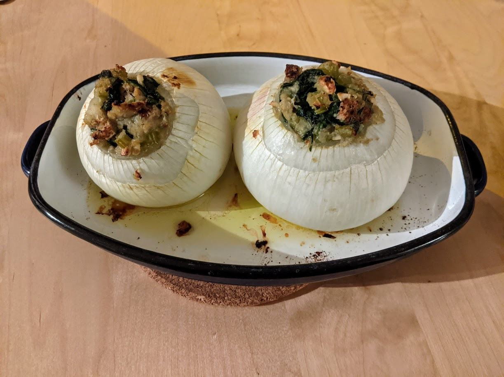

Oignons farcis végétariens

Pour 4 personnes :
- Deux oignons frais supermassifs, ou quatre gros (cf. remarque en bas)
- Trois gousses d'ail
- Quatre branches de céleri
- 300g de pain (idéalement, pain de campagne)
- 300g d'épinards
- 150g de noix de cajou
- 250mL de bouillon de légumes (maximum, typiquement on en utilise moins)
- Sel, poivre, huile d'olive
- Faire chauffer une poêle et y faire toaster le pain et les noix de cajou pour que ça prenne légèrement des couleurs. Couper le pain en petits morceaux, écraser grossièrement les noix de cajou toastées, réserver.
- Faire préchauffer le four à 220°C. Couper un chapeau dans les oignons horizontalement, à approximativement 3/4 de leur hauteur. Les évider à la cuillère, en ne laissant que deux ou trois couches extérieures. Les couper sur le bas très légèrement pour qu'ils tiennent debout, les disposer dans une plat à four beurré.
- Mettre un fond d'eau dans un plat à four que l'on place en bas du four. Enfourner les oignons évidés une demi-heure environ, il faut qu'ils deviennent un peu mous mais qu'ils se tiennent quand même bien.
- Pendant ce temps, mixer la chair des oignons grossièrement, et faire revenir le tout dans la
poêle à feu moyen, avec un peu d'huile d'olive.
- Laver et émincer le céleri, éplucher et émincer l'ail, laver les épinards, ajouter tout au fur et à mesure dans la poêle. Si ça attache, ajouter un peu de bouillon pour déglacer.
- Une fois que le mélange a bien réduit, mélanger le tout avec le pain et les noix de cajou. Ajouter un peu de bouillon de légumes et mélanger pour que ça forme une pâtée qui se tienne sans être trop humide.
- Farcir les oignons avec le mélange en tassant bien et faisant en sorte que ça déborde un peu, arroser un peu d'huile d'olive, remettre au four une demi-heure (toujours avec un plat à four rempli d'eau en bas du four). Servir chaud.
Remarque : c'est une recette qui va bien pour les très gros oignons qu'on achète à l'unité sur les marchés suisses. C'est très probablement adaptable avec de gros oignons sec, en en prenant 2 par personne, en les épluchant avant de les enfourner, et en diminuant un peu les temps de cuisson.
Retour à la liste des recettes